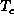

Data Structures and Algorithms
with Object-Oriented Design Patterns in Java
Data Structures and Algorithms
with Object-Oriented Design Patterns in Java
This section outlines an implementation of general trees
in the sense of Definition  .
The salient features of the definition are first,
that the nodes of a general tree have arbitrary degrees;
and second, that there is no such thing as an empty tree.
.
The salient features of the definition are first,
that the nodes of a general tree have arbitrary degrees;
and second, that there is no such thing as an empty tree.
The recursive nature of Definition has important
implications when considering the implementation of such trees as containers.
In effect, since a tree contains zero or more subtrees,
when implemented as a container,
we get a container which contains other containers!
Figure shows the approach we have chosen
for implementing general trees.
This figure shows how the general tree  in Figure
can be stored in memory.
The basic idea is that each node has associated with it a linked list
of the subtrees of that node.
A linked list is used because there is no a priori restriction
on its length.
This allows each node to have an arbitrary degree.
Furthermore, since there are no empty trees,
we need not worry about representing them.
An important consequence of this is that the implementation
never makes use of the null reference!
Figure: Representing general trees using linked lists.
Program introduces the GeneralTree class
which is used to represent general trees
as specified by Definition .
The GeneralTree class extends the AbstractTree class
introduced in Program .
 Copyright © 1998 by Bruno R. Preiss, P.Eng. All rights reserved.
Copyright © 1998 by Bruno R. Preiss, P.Eng. All rights reserved.